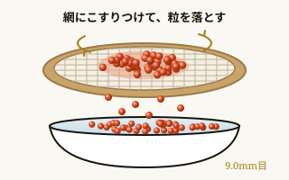
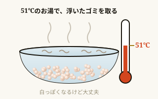
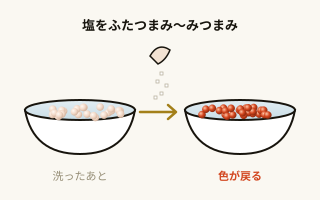
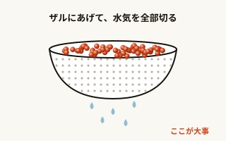
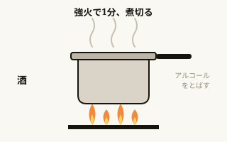

20匹鮭の数
12時間味噌に漬ける
40本瓶に詰める
毎年秋、鮭20匹ぶんの筋子をほぐして、味噌いくらと醤油いくらを仕込んでいます。一年たつと細かいところを忘れてしまうので、準備物の数と、うまくいったやり方をここにまとめました。商品をタップするとAmazonの商品ページが開きます。
準備物PREP
場所をつくる
 床ブルーシート 2畳用 約180×180cmオカザキ4枚
床ブルーシート 2畳用 約180×180cmオカザキ4枚
 養生マスキングマスカー 幅2100mm×長さ20m和気産業 ・ CM-034 ・ 上がテープ、下のビニールを広げて床や壁を覆う3本
養生マスキングマスカー 幅2100mm×長さ20m和気産業 ・ CM-034 ・ 上がテープ、下のビニールを広げて床や壁を覆う3本
 養生貼ってはがせる養生テープ 50mm×25mAPMジャパン ・ 5個セット ・ シートの端やすき間をとめる1セット
養生貼ってはがせる養生テープ 50mm×25mAPMジャパン ・ 5個セット ・ シートの端やすき間をとめる1セット
100均テーブル透明のテーブルクロス100円ショップで適量
 除菌パストリーゼ77 500ml（ヘッド付き＋詰め替え）ドーバー ・ 食品にも使えるアルコール2本
除菌パストリーゼ77 500ml（ヘッド付き＋詰め替え）ドーバー ・ 食品にも使えるアルコール2本
 消臭超強力消臭スプレー 300ml 無香料プロ使用実績あり ・ 魚のにおいに2本
消臭超強力消臭スプレー 300ml 無香料プロ使用実績あり ・ 魚のにおいに2本
ゴミをまとめる
段ボールゴミ箱段ボール箱（丈夫なもの）ゴミ袋をかぶせてゴミ箱にする3箱
 ゴミ袋ゴミ袋 90L 厚くて丈夫 HD-900ケミカルジャパン ・ 40枚入り（20枚×2）・ 半透明100枚40枚入りを3つ
ゴミ袋ゴミ袋 90L 厚くて丈夫 HD-900ケミカルジャパン ・ 40枚入り（20枚×2）・ 半透明100枚40枚入りを3つ
さばく・切る
手袋手袋ビニール手袋（使い捨て）魚や筋子をさわるときに1箱
まな板まな板まな板鮭をさばく手持ちで
包丁包丁包丁切り身にする手持ちで
ハサミハサミキッチンバサミあると便利手持ちで
ほぐす・洗う
 ほぐし網木製砂フルイ 丸型 φ35cm 9.0mm目千吉（藤原産業）・ ヒノキ枠 ・ 品番6892271個
ほぐし網木製砂フルイ 丸型 φ35cm 9.0mm目千吉（藤原産業）・ ヒノキ枠 ・ 品番6892271個
 鱗取りステンレスたわし 2個組下村企販1個
鱗取りステンレスたわし 2個組下村企販1個
IKEAボウルいちばん大きいボウルIKEA ・ 手持ち3つ＋もう1つあると楽4個
大きめザル大きいザル洗ったいくらの水気を切る3〜4個
 使い捨てバガスプレート 平皿 大50枚入り ・ 通常ゴミで捨てられる30枚
使い捨てバガスプレート 平皿 大50枚入り ・ 通常ゴミで捨てられる30枚
割り箸試食割り箸みんなで試食する用。どれでもOK人数分
 使い捨てカウンター用クロス 不織布ふきんby Amazon ・ 100枚入り ・ 厚手30〜40枚
使い捨てカウンター用クロス 不織布ふきんby Amazon ・ 100枚入り ・ 厚手30〜40枚
漬ける
 バット燕三条 角バット XXLサイズ 35cmナガオ ・ A4より少し大きい・深さ約5cm4〜5枚
バット燕三条 角バット XXLサイズ 35cmナガオ ・ A4より少し大きい・深さ約5cm4〜5枚
 蓋角バット XXLサイズ用 蓋ナガオ ・ 蓋は絶対にあったほうがいい4〜5枚
蓋角バット XXLサイズ用 蓋ナガオ ・ 蓋は絶対にあったほうがいい4〜5枚
 布業務用 モチフキン 670×670mm遠藤商事 ・ WMT04001 ・ 小さいサイズはない16〜20枚
布業務用 モチフキン 670×670mm遠藤商事 ・ WMT04001 ・ 小さいサイズはない16〜20枚
コストコ紙キッチンペーパーコストコのものがお気に入り適量
詰める・しまう
 瓶ジャム瓶 S150-6角ST 150ml 金ふたガラスビン.com ・ 10本セット20本2セット
瓶ジャム瓶 S150-6角ST 150ml 金ふたガラスビン.com ・ 10本セット20本2セット
 瓶ジャム瓶 TF-200 200ml 金ふたガラスビン.com ・ 10本セット20本2セット
瓶ジャム瓶 TF-200 200ml 金ふたガラスビン.com ・ 10本セット20本2セット
 真空パック真空パック袋 20×25cmGokilife ・ 100枚入り ・ 鮭の切り身を2〜3匹ぶんずつ200枚使うのは100枚ちょっと
真空パック真空パック袋 20×25cmGokilife ・ 100枚入り ・ 鮭の切り身を2〜3匹ぶんずつ200枚使うのは100枚ちょっと
 真空パック真空パック機 フードシーラー VPF-M60アイリスオーヤマ ・ チャコールグレー1台
真空パック真空パック機 フードシーラー VPF-M60アイリスオーヤマ ・ チャコールグレー1台
調味料
 日本酒一生青春 亀の尾100% 無濾過純米生酒 720ml曙酒造（福島県会津）・ 味噌床にも醤油漬けにも、煮切ってこのお酒を使う2本
日本酒一生青春 亀の尾100% 無濾過純米生酒 720ml曙酒造（福島県会津）・ 味噌床にも醤油漬けにも、煮切ってこのお酒を使う2本
 味噌甘口みそ だし入り カップ 650gかねさ（青森）・ バット1枚につき1箱バットの数
味噌甘口みそ だし入り カップ 650gかねさ（青森）・ バット1枚につき1箱バットの数
 醤油寺岡家の有機醤油 淡口寺岡有機醸造 ・ 醤油漬けに1本
醤油寺岡家の有機醤油 淡口寺岡有機醸造 ・ 醤油漬けに1本
 みりん有機三州味醂 500ml角谷文治郎商店 ・ 無添加・有機JAS1本
みりん有機三州味醂 500ml角谷文治郎商店 ・ 無添加・有機JAS1本
塩塩塩洗ったあとにふたつまみ〜みつまみ少し
ほぐして洗うPREP
- 鮭の鱗はステンレスたわしでこすって取る。切り身は水気をしっかり拭き取ってから、冷凍庫で1〜2時間ちょっと凍らせて、2〜3匹ぶんずつ真空パックする（少し凍らせてからのほうが、汁が出にくく真空しやすいらしい）。
- 筋子をほぐし網（9.0mm目のふるい）にこすりつけて、粒をばらす。

- 51℃のお湯で洗う。浮いてくる膜やゴミを、きれいになるまで取る。このときいくらは白っぽくなるけれど、大丈夫。

- 洗い終わったら塩をふたつまみ〜みつまみ（いくらの量で加減する）。これで色がきれいに戻る。

- 必ずザルにあげて、水気を全部切る。ここが甘いと味がぼやける。

味噌漬けMISO
味噌床をつくる
- 日本酒を強火で1分くらい煮切る。

- だし入りの味噌（かねさ・バット1枚につき1箱650g）に、煮切った酒を約70ml、少しずつ入れながら溶く。塗りやすいペーストになればOK。
煮切った日本酒は、必ず冷ましてから使う。熱いまま味噌に入れたり、いくらにかかったりしないように。
バットに重ねる
味噌いちばん上
キッチンペーパー
モチフキン
いくら（1段だけ）2段目
モチフキン
キッチンペーパー
味噌
キッチンペーパー
モチフキン
いくら（1段だけ）1段目
モチフキン
キッチンペーパー
味噌バットの底
下から順に重ねていきます。深さ5cmくらいのバットで2段まで。
- 底の味噌は均等にのばす。端っこは塗りにくくて忘れがちなので気をつける。
- いくらは1段だけ、薄く広げる。重ねすぎると下のいくらが潰れる。
- 漬ける時間は12時間。
醤油漬けSHOYU
いろいろ試した中で、いちばん美味しかった配合です。
| 薄口醤油（寺岡家の淡口） | 大さじ3 |
| 酒（一生青春） | 大さじ3 |
| みりん（有機三州味醂） | 大さじ2 |
| 水 | 大さじ1 |
| いくら | 250〜300g |
- 酒とみりんを先に強火で煮切る。
- そこに醤油と水を入れて、必ず冷ます。
- 水気を切ったいくらを漬ける。味が足りなければ、醤油をほんの少し足す。
この配合でたれは約120mlできます。いくら250〜300gがひたひたに浸かるくらいの量です。たくさん仕込むときは、いくらの重さに合わせて倍にしてください。
瓶に詰めるJAR
瓶は必ず煮沸してから使う。ここは絶対に飛ばさない。
- 瓶とふたを鍋に入れて、煮沸する。
- 清潔なふきんの上に逆さに置いて、中までしっかり乾かす。
- 漬け終わったいくらを詰めて、ふたを閉める。
来年への申し送りNOTE
- 魚のアラは1袋にまとめない。今年は1袋に入れたら重すぎた。何袋かに分けて出す。
- ボウルはもう1つあると楽。IKEAのいちばん大きいものを4つに。
- 味噌は1箱を1枚のバットに使い切ったけれど、少し塗りすぎだったかもしれない。来年は少し減らして試す。
- モチフキンは20枚あるといちばん楽。最低でも16枚。
- 真空パック袋は200枚用意して、実際に使ったのは100枚ちょっと。
- 味噌は無添加に挑戦したい。今回のかねさのだし入りに近い味で、無添加のだし入り味噌を探して試す。
- 醤油漬けは2つに分けて食べ比べる。①今の配合（いちばん美味しかったもの）と、②今の配合のたれに昆布をひと切れ入れたもの、または無添加のだし醤油で作ったもの。だし醤油は甘めで塩気も商品ごとに違うので、味を見ながら加減する。